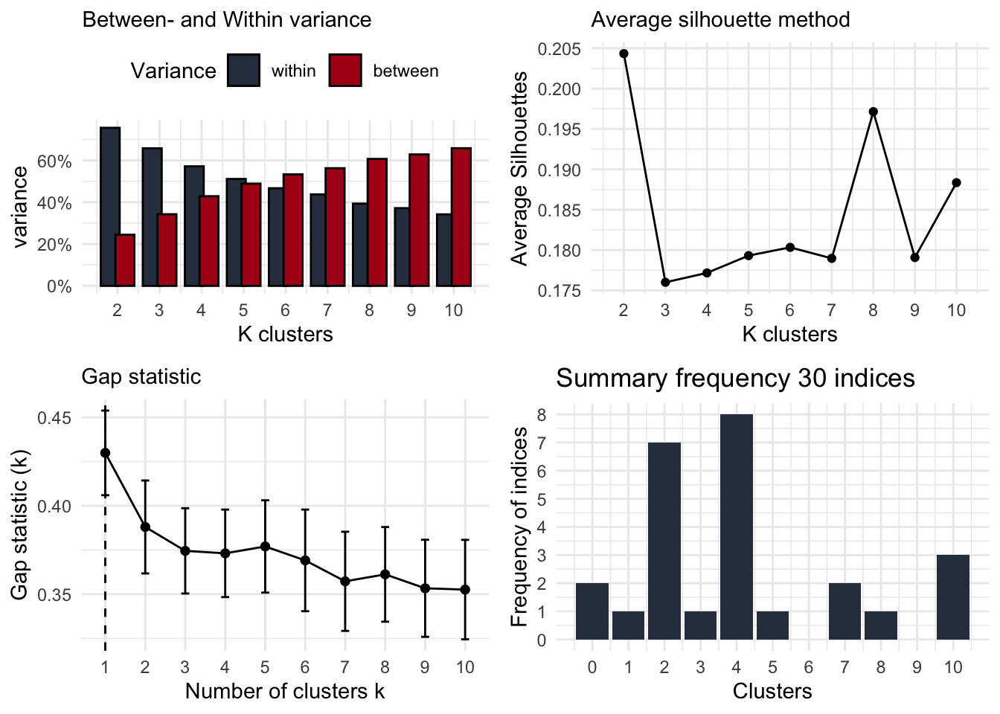
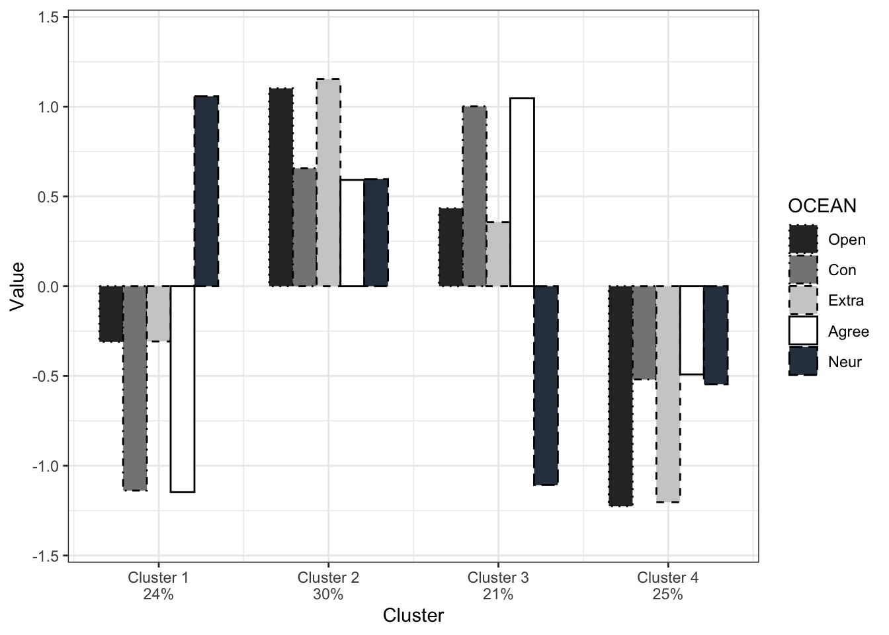

# describe the cluster variables
clustervariables <- c("Open","Con","Extra","Agree","Neur")
# make a dataset only with those
# having assessments for all cluster variables
data_complete <- data[complete.cases(data[,clustervariables]),]
# make a subset with only the cluster variables
# to check for clusters
df_clust <- data_complete[,clustervariables]
# standardize all variables
df_clust <- scale(df_clust,scale=TRUE)
# save it as a data frame to make sure
# all other functions work properly
df_clust <- as.data.frame(df_clust)ClusteRing
standardization
h-index
cluster validation
clustering
cluster stability
barplot
Perform cluster analyses in R
Preparatory steps
First, we standardize all cluster variables make a subset of our dataframe, only and only including the cluster variables. This dataset will be used to perform some validation techniques in order to select the most accurate number of clusters. In this example, we use five cluster variables: Openness, Conscientiousness, Extraversion, Agreeableness, and Neuroticism.
Validation before clustering
Before we actually want to cluster, we already can have an indication to what extent ‘our data is clusterable’. This is done using the Hopkin statistic (HOPKINS and SKELLAM 1954), which can be interpreted as a ‘chance of finding meaningful clusters’. When this is 0.50, this means there is an equally high chance of observing meaningful clusters as finding meaningless clusters. The higher, the better.
In our experience, we noticed that, when having a Hopkin statistic of, for instance, 0.52 or 0.56, the validation techniques of finding the optimal number of clusters indeed were inconclusive.
library(factoextra)
# original dataset
res.o <- get_clust_tendency(df_clust,
n = nrow(df_clust)-1,
graph=FALSE)
H_dataset <- round(res.o$hopkins_stat,3)
# random dataset
random_dffull <- as.data.frame(apply(df_clust,2,
function(x){runif(length(x),
min(x),
max(x))}))
# testing tendency
res.r <- get_clust_tendency(random_dffull,
n = nrow(random_dffull)-1,
graph=FALSE)
H_random <- round(res.r$hopkins_stat,3)
# make table for output
table_H <- cbind(H_dataset,H_random)
colnames(table_H) <- c('df_clust','random dataset')
rownames(table_H) <- 'Hopkin statistic'
table_H df_clust random dataset
Hopkin statistic 0.585 0.482Here, the H-statistics shows a value of .59, which is higher than .50, meaning there is a chance of having meaningful clusters.(Kaufman and Rousseeuw 1990)
Validation during clustering
The clusteRsfunction of the CaviR package provides four figures showing a particular type of validation for a number of clusters. Indeed, we want to have all four of them, as we want to make a considered decision on how many clusters are in our dataset. This does not mean that all four types of validations will point towards the same number of clusters (sometimes it does, indicating strong evidence for a particular number). Therefore, you need to consider all types and explain in your reporting why you choose for a particular number of clusters.
What are the validation techniques?
- Elbow method: the number of clusters with both a minimum of within-cluster variation and a maximum of between-cluster variation
- the Average Silhouette method: the number of clusters with the highest average silhouette, indicating the best quality of clustering (Kaufman and Rousseeuw 1990)
- the Gap statistic method: the number of clusters with the highest Gap-statistic (Tibshirani, Walther, and Hastie 2001)
- Majority rule: a summary of 30 indices reporting the most optimal number of clusters using the ‘NbClust’ function (Charrad et al. 2014), including the CH index (Calinski and Harabasz 1974)
library(CaviR)
clusteRs(df_clust)
After having decided the number of clusters
After all validation techniques, you can choose the number of clusters and perform the hkmeans function.
# function for two-step clustering procedure
hkm <- hkmeans(data_complete[,clustervariables],
k = 4, # chosen number of clusters
hc.metric="euclidian",
hc.method='ward.D2',
iter.max = 10,
km.algorithm = "Hartigan-Wong")
# assign cluster variable to your dataset
data_complete$clusters <- as.factor(hkm$cluster)
# check proportions of participants into the clusters
library(questionr)
freq(data_complete$clusters) n % val%
1 24 23.8 23.8
2 30 29.7 29.7
3 21 20.8 20.8
4 26 25.7 25.7Using the following code, we can have a barplot. Here, we work with the standardized cluster variables, although it might be interesting to have a figure with the raw values as the standardized variables make relative differences. Then, we need to make sure that we also interpret the absolute values (lower values do not mean low values!):
library(ggplot2); library(rstatix)
# calculate means of standardized variables by cluster levels
hkmdata <- as.data.frame(
aggregate(data_complete[,c(clustervariables)],
by=list(cluster=data_complete$clusters),
mean))
hkmdata[,2:(length(clustervariables)+1)] <- as.data.frame(scale(
hkmdata[,2:(length(clustervariables)+1)],
scale=TRUE))
# restructure into long format
data_long <- gather(hkmdata, type, measurement,
names(df_clust),
factor_key=TRUE)
# change column names
colnames(data_long) <- c('Clusters','Type','Value')
# make sure they have the right format
data_long$Clusters <- as.numeric(data_long$Clusters)
data_long$Type <- as.factor(data_long$Type)
# if you want to change the order of the clusters,
# this can be done here:
data_long$Clusters <- as.character(data_long$Clusters)
data_long$Clusters <- as.factor(data_long$Clusters)
levels(data_long$Clusters) <- c("3","4","1","2") # preferred order
data_long$Clusters <- as.character(data_long$Clusters)
data_long$Clusters <- as.numeric(data_long$Clusters)
# figure
ggplot(data=data_long,
aes(x=Clusters, y=Value, fill=Type, linetype=Type)) +
geom_bar(stat="identity",width = 0.7,
position=position_dodge(),
color='black')+
# y axis
scale_y_continuous(limits = c(-1.4,1.4))+
# provide color to bars
scale_fill_manual("OCEAN", # name of cluster variables
# labels for cluster variables
labels=clustervariables,
# colors for cluster variables
values=c('#2e2e2e','#858585',
'#cecece','#ffffff',
"#2F3D4E") )+
# provide different linetype to bars
# (useful for black/white printing)
scale_linetype_manual("OCEAN", # name of cluster variables
# labels for cluster variables
labels=clustervariables,
# linetypes for cluster variables
values=c('dotted','dotdash',
'dashed','solid','longdash'))+
# settings for x-axis
scale_x_continuous(name="Cluster", # name for x axis
breaks=c(1:4), # 'breaks' = number of clusters
# labels for clusters.
# Here you can add the proportions
# underneath the name, using \n
labels= c( "Cluster 1\n24%",
"Cluster 2\n30%",
"Cluster 3\n21%",
"Cluster 4\n25%"))+
# settings for layout
theme(
legend.position = 'right',
legend.spacing.x = unit(1, 'mm'),
axis.title.x = element_blank(),
plot.caption = element_text(color = "black")
)+
# ggplot theme
theme_bw()
Based on the output of the figure - which can help in interpreting the content of a cluster - now you can provide labels to the clusters in the dataset itself. This variable can be used in between-cluster analyses (can be done using frequency tables or (M)ANOVA)
levels(data_complete$clusters) <- c('NAME_clus1','NAME_clus2',
'NAME_clus3','NAME_clus4')Validation after clustering
Even after we chose the number of clusters and even labelled them, we can perform a validation technique to check the ‘stability’ of the clusters. Basically, it performed the clustering analyses on one part of the dataset, and uses the K-mean values as the input of a clustering analysis on the other part of the dataset:
# divide dataset into two parts: subset A and B
set.seed(7)
ss <- sample(1:2,size=nrow(data_complete),
replace=TRUE,prob=c(0.5,0.5))
subsetA <- data_complete[ss==1,c('clusters',clustervariables)]
subsetB <- data_complete[ss==2,c('clusters',clustervariables)]
# perform clustering analysis in both parts
hkmA <- hkmeans(subsetA[,clustervariables],
k = 4,
hc.metric="euclidian",
hc.method='ward.D2',
iter.max = 10,
km.algorithm = "Hartigan-Wong")
hkmB <- hkmeans(subsetB[,clustervariables],
k = 4,
hc.metric="euclidian",
hc.method='ward.D2',
iter.max = 10,
km.algorithm = "Hartigan-Wong")
# use the output of the cluster analysis in
# each subset as the initial starting points
# for a clustering analysis in the other subset
kmeanAB <- kmeans(subsetA[,clustervariables],
# here we refer to the values of the cluster analyses
# in the other subset
hkmB$centers,
iter.max=10,
nstart=1,
algorithm = "Hartigan-Wong")
subsetA$AB <- as.factor(kmeanAB$cluster) # assign it to the subset
kmeanBA <- kmeans(subsetB[,clustervariables],
hkmA$centers,
iter.max=10,
nstart=1,
algorithm = "Hartigan-Wong")
subsetB$BA <- as.factor(kmeanBA$cluster)So, when this is done, we want to have an indication of how good the clustering in a different part of the dataset results in a good clustering in another part of the dataset. The stability is checked with a Cohen’s Kappa-index k testing the correspondence between the subsample-clustering results and the clustering results forming from the original clustering procedure. An acceptable cluster stability is assumed when k is .60 or higher (Asendorpf et al., 2001). The final results of the clustering procedure will be presented in a barplot with the standardized cluster variables as a function of the cluster classification.
Beware, we might need to restructure the table to make sure we have the same clusters being compared.
# check in subset A
mytableAB <- with(subsetA, table(clusters,AB))
mytableAB # table. When ok, do nothing. AB
clusters 1 2 3 4
1 9 0 0 3
2 0 7 0 11
3 0 3 7 0
4 1 2 4 0# When not oke, change order of columns:
colnames(mytableAB) <- c("1","4","3","2")
mytableAB <- mytableAB[ , c("1","2","3","4")]
# computer Kappa
library(vcd)
Kappa(mytableAB) value ASE z Pr(>|z|)
Unweighted 0.4851 0.09241 5.249 1.529e-07
Weighted 0.5151 0.09311 5.532 3.162e-08# repeat for subset B:
mytableBA <- with(subsetB, table(clusters,BA))
mytableBA# table. When ok, do nothing. BA
clusters 1 2 3 4
1 0 12 0 0
2 0 0 0 12
3 6 0 3 2
4 13 6 0 0# When not oke, change order of columns:
colnames(mytableBA) <- c("4","1","3","2")
mytableBA <- mytableBA[ , c("1","2","3","4")]
Kappa(mytableBA) value ASE z Pr(>|z|)
Unweighted 0.6464 0.07888 8.194 2.519e-16
Weighted 0.6495 0.09053 7.175 7.237e-13References
Calinski, T., and J. Harabasz. 1974. “A Dendrite Method for Cluster Analysis.” Communications in Statistics - Theory and Methods 3 (1): 1–27. https://doi.org/10.1080/03610927408827101.
Charrad, Malika, Nadia Ghazzali, Véronique Boiteau, and Azam Niknafs. 2014. “NbClust: AnRPackage for Determining the Relevant Number of Clusters in a Data Set.” Journal of Statistical Software 61 (6). https://doi.org/10.18637/jss.v061.i06.
HOPKINS, BRIAN, and J. G. SKELLAM. 1954. “A New Method for Determining the Type of Distribution of Plant Individuals.” Annals of Botany 18 (2): 213–27. https://doi.org/10.1093/oxfordjournals.aob.a083391.
Kaufman, Leonard, and Peter J. Rousseeuw. 1990. “Finding Groups in Data.” Wiley Series in Probability and Statistics, March. https://doi.org/10.1002/9780470316801.
Tibshirani, Robert, Guenther Walther, and Trevor Hastie. 2001. “Estimating the Number of Clusters in a Data Set Via the Gap Statistic.” Journal of the Royal Statistical Society Series B: Statistical Methodology 63 (2): 411–23. https://doi.org/10.1111/1467-9868.00293.